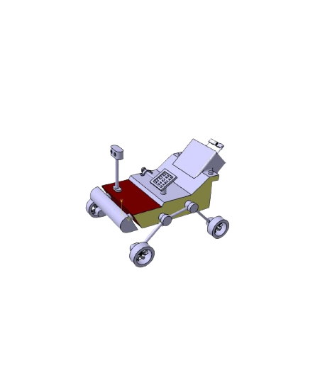

Title:
Design and analysis of Go-Kart chassis:-
- Designed and analyzed the GO-KART chassis using diverse materials and conditions, evaluating performance, safety,
and durability to optimize the design for enhanced
performance
and longevity.
Fig:-Go-Kart
Solar Grass-Cutter:-
- -This Grass Cutter Model - designed with inspiration from the Perseverance Rover. It is a robotic lawn mower and built with a body of PVC and thin Steel base, similar to the Perseverance Rover, to withstand
rough terrain.

Fig:-Rover-Model